Professional Summary
Strategic Academic Leader and Director of Research with a distinguished track record in driving institutional research agendas, knowledge exchange, and the delivery of high-impact cybersecurity programs across international markets.
Language Proficiency
Education
-
Ph.D. in Computer Science and Engineering (AI and Cybersecurity)
University of Kassel, Germany 🌐
Graduated: August 2014Thesis: Adaptive Real-time Anomaly-based Intrusion Detection using Data Mining and Machine Learning Techniques [View Thesis]
-
M.Sc. in Computer Engineering (System-Security)
University of Duisburg-Essen, Germany 🌐
Graduated: May 2006Thesis: Development of a Secure Web-Based Application for Managing Linux Clusters
-
B.Sc. in Computer Engineering
Jordan University of Science and Technology, Jordan 🌐
Graduated: May 2002Project: Design and Implementation of a Magnetic Suspension and Elevation System
Academic Awards & Professional Affiliations
🎖️ Academic Honors & Recognitions
- King's Education Award – Nominated, King's College London (2025)
- King's Education Award – Nominated, King's College London (2024)
- Senior Fellow (SFHEA) – Advance HE, United Kingdom (2024)
- Recognition Awards – For Contributions to Teaching & Innovation, King's College London (2022 & 2023)
📚 Memberships in Professional & Academic Communities
- Member – Professional member of the British Computer Society (April 2025 – Present)
- Member – Professional Member of Association for Computing Machinery (ACM) (April 2025 – Present)
- Member – King's Computing Education Research Centre (CERC) (Sep 2024 – Present)
- Member – Society for Research into Higher Education (SRHE) (Jan 2024 – Present)
- Member – CSE Connect, King's College London (Cybersecurity Education Network, UK) (Jan 2024 – Present)
- Member – Association for Learning Development in Higher Education (ALDinHE) (Dec 2023 – Present)
- Member – King's Academy of Education & Innovation (Jan 2022 – Present)
- Cybersecurity Expert – Al Arabiya News, UK Broadcast Contributor (Jan 2022 – Present)
- Member – Cybersecurity Group, King's College London (Enterprise & Engagement Division) (Sep 2021 – Present)
- Member – Campus Council, Higher Colleges of Technology (UAE) (Sep 2019 – Jul 2021)
Leadership Roles & Academic Governance
-
Director Research and Knowledge ExchangeNov 2025 – PresentLiverpool John Moores University | Oryx University Qatar
Provide strategic leadership for an organization's research activities and facilitate the translation of research findings into practical applications. This involves fostering a research culture, securing funding, and building bridges between research teams and external partners to ensure knowledge generates tangible impact.
-
Programme Lead - CybersecurityNov 2025 – PresentLiverpool John Moores University | Oryx University Qatar
Direct and oversee the strategic development, delivery, and quality assurance of academic cybersecurity programs, ensuring curriculum relevance and educational excellence.
-
Module Lead – Advanced Cybersecurity (Postgraduate)Sep 2021 – PresentKing's College London, UK
Leading curriculum development and postgraduate delivery for the advanced cybersecurity track.
-
Deputy Chair – Online Cybersecurity Assessment Sub-BoardDec 2021 – PresentKing's College London, UK
Oversight of academic assessment governance and quality assurance across online MSc programmes.
-
Employability & Career Lead – Informatics & EngineeringDec 2021 – PresentKing's College London, UK
Driving career pathways, industry links, and student placement strategies across STEM departments.
-
Acting Chair – Computer Information SystemsSep 2017 – Jul 2018Higher Colleges of Technology, UAE
Managed faculty teams, strategic planning, and programme delivery at the departmental level.
-
Campus Council Member – Al-Ain CampusesSep 2018 – Jul 2021Higher Colleges of Technology, UAE
Advised on institutional governance, student affairs, and academic development.
-
System Course Team Leader – Computer Information SystemsSep 2015 – Jul 2021Higher Colleges of Technology, UAE
Led system-wide curriculum alignment and digital learning integration across national campuses.
-
Program Academic Committee Member – Computer Information SystemsSep 2019 – Jul 2021Higher Colleges of Technology, UAE
Collaborated on curriculum review, quality assurance, and academic policy development.
Selected Research Projects
King's Undergraduate Research Fellowship
Institution: King's College London
Period: July 2023 & July 2024
Role: Principal Investigator
- Supervised undergraduate and postgraduate cybersecurity research fellows.
- Coordinated multiple student-led cybersecurity investigations and publications.
- Budget: £10,000
Evaluating the Effectiveness of Online Cybersecurity Programs
Institution: King's College London
Period: May 2023 – Feb 2024
Role: Principal Investigator
- Assessed online cybersecurity programs from a career-readiness perspective.
- Bridged academic outcomes with practical industry demands for cybersecurity professionals.
- Budget: £5,000
CIREI – Smart Middleware for Assistive Robots in Frail Elderly Homes
Funding: UKRI EMERGENCE | King's College London
Period: 2023 – 2024
Role: Co-Investigator
- Built secure middleware architecture integrating IoT/robotics in home healthcare.
- Advanced smart-home cybersecurity for vulnerable populations.
- Budget: £80,000
Cybersecurity Training Program – Qatar Central Bank
Institution: King's College London & Qatar Central Bank
Period: 2023
Role: Lead Instructor & Program Designer
- Developed executive training on advanced cyber threats and response.
- Delivered real-world simulation-based modules to regulators and analysts.
- Budget: Confidential
Blockchain for Financial Market Infrastructure – UAE
Institution: Higher Colleges of Technology
Period: 2020 – 2022
Role: Principal Investigator
- Explored blockchain-driven clearing and settlement systems for UAE financial markets.
- Proposed technical model for end-to-end digital transactions.
- Budget: AED 200,000
UAE-STUB – Securing Transportation Using Blockchain
Institution: Higher Colleges of Technology
Period: 2019 – 2020
Role: Principal Investigator
- Developed blockchain-based vehicle monitoring for malicious activity detection.
- Budget: AED 5,000
Blockchain in Trading & Clearing – Abu Dhabi Securities Exchange
Institution: Higher Colleges of Technology
Period: 2019
Role: Co-Investigator
- Investigated blockchain use cases for national stock exchange operations.
- Budget: AED 200,000
IntErA – Intelligent Detection of Cyber-Attacks on IT Infrastructures
Institution: Kassel University (Germany)
Period: 2014 – 2017
Role: Principal Investigator
- Secured €400K funding from the German Ministry for adaptive intrusion detection research.
- Proposed and built a prototype for pattern-based anomaly detection.
- Budget: €400,000
SecMonet – Research Project in Network Security
Institution: Kassel University (Germany)
Period: 2011 – 2014
Role: Principal Researcher
- Designed adaptive intrusion detection using ML and feature selection techniques.
- Organized multiple international dissemination workshops and collaborations.
- Budget: €370,000
Academic & Industrial Experience
Bridging cutting-edge research, education, and industry innovation in cybersecurity
Associate Professor
Liverpool John Moores University | Oryx University
Oct 2025 - Present
Doha, Qatar
- Curriculum Leadership: Delivering cybersecurity modules and integrating advanced Cybersecurity activities.
Visiting Professor (Affiliate)
King's College London
Sep 2025 - Present
London, UK
- PhD Research Supervision
Associate Professor
King's College London
Sep 2021 - Present
London, UK
- Curriculum Leadership: Designed advanced postgraduate cybersecurity modules integrating advanced Cybersecurity activities.
- Research Excellence: Secured funded projects and publish in top tier venues.
- Award-Winning Educator: Recipient of King's Recognition Award (2022 & 2023) and nominee for Teaching Excellence Award (2024 & 2025).
- Governance: Deputy Chair of Cybersecurity Assessment Board, reforming competency-based evaluation frameworks.
- Thought Leadership: Keynote speaker at 12+ international conferences/Exhibitions/Events/News on Cybersecurity.
Assistant Professor
Higher Colleges of Technology
Sep 2015 - Jul 2022
UAE
- Program Development: Design and develop undergraduate courses in Cybersecurity.
- Operational Leadership: Deputy CIS Chair, Campus council member, and Member of campus strategic planning.
- Industry Collaboration: Partnered with DarkMatter and UAE CERT on penetration testing capstone projects.
- Research Impact: Led team developing cybersecurity innovative solutions for UAE financial institutions.
Automotive Cybersecurity Specialist
AUDI AG
Oct 2014 - Aug 2015
Ingolstadt, Germany
- V2X Security: Architected security solutions such as TPM and HSM, for in-vehicle ECUs.
- Innovation: Led an in-vehicle Intrusion Detection System project.
- Testing: Conducted penetration testing for automotive ECU security.
Cybersecurity Project Lead
University of Kassel
Jan 2011 - May 2014
Kassel, Germany
- Research Leadership: Directed €370K BMBF-funded SecMonet project on adaptive IDS/IPS systems.
- Teaching Innovation: Teaching and administration Cybersecurity courses and labs.
Industry Leadership
IT Security Engineer
Nokia • E-Plus • Philips
2004-2010 | Germany
- Designed hardened network architectures for 3G/4G core networks
- IT Administrator for installing, Configuring, and Monitoring Networks
Teaching Experience & Academic Training
Courses Delivered
Postgraduate & Undergraduate Curriculum:
- Cybersecurity Analysis & Reporting
- Security Engineering
- Computer Forensics & Cybercrime
- Security Testing (Pentest & Ethical Hacking)
- Incident Response Planning
- Network Security & IDS/IPS
- Ethical Hacking & Intrusion Detection
- Systems Analysis & Design
- Information Systems Security
- Security Intelligence
- Statistics for Data Science
- Risk Management
- Capstone Supervision Projects
Participation in Academic Accreditation
- Artificial Intelligence BSc Programme – Academic Career Lead, King's College London British Computer Society | 06/2023 – 06/2026
- Cybersecurity MSc (Online) – Module Lead, King's College London National Cybersecurity Centre (NCSC) | 03/2024 – Present
- Computer Information Systems BSc – Contributor, HCT Canada's Association of IT Professionals (CIPS) | 05/2018 – 05/2021
Research Student Supervision
- PhD: Critical Software Vulnerability Discovery using AI – 2024/25
- BSc: Combating Fake Social Media Accounts Using Threat Intelligence – 2024/25
- BSc: Inclusive Virtual Machine for Cybersecurity Testing – 2023/24
- MSc: AI Protection for Senior Citizens – 2023
- BSc: Project-Based Cybersecurity Learning Model – 2022/23
- MSc: Adaptive Malware Pattern Generation (Awarded Best Project) – 2021/22
- BSc: Detecting Malware in WhatsApp Using ML – 2021/22
- MSc: Hierarchical SOM for Malware Detection – 2021/22
- BSc: Analyzing Student Feedback using ML – 2022/23
- BSc: 50+ Projects Supervised in Cybersecurity (2015–2020)
- MSc & BSc: IPv6 & Intrusion Detection Projects (2011–2014)
Academic Training & Certifications
- Module Design – King's Academy (UK)
- Tutorship Training – King's Academy (UK)
- PhD Supervision – King's Academy (UK)
- Diversity & Bystander Training – King's Academy (UK)
- Interactive Learning Resources – King's Academy (UK)
- Personalised Learning – King's Academy (UK)
- Instructional Design – Becker Academy (USA)
- Blackboard Teacher Certification – HCT
- Technology Integration in Online Classes – HCT
- Online Collaboration with Office 365, Teams, Nearpod – HCT
- UKPSF Classroom Observation Standards – HCT
Certifications (Selected)
CISSP (Certified Information Systems Security Professional)
ISC2 2024
- (Note): in the process of obtaining this certificate
- CISSP is a globally recognized certification in information security. It validates your knowledge and expertise in a wide range of security domains
Data Protection and Information Security
King's College London . 2021
- The Data Protection and Information Security (Information Compliance) certificate is typically awarded to individuals who have completed training or education in the areas of data protection, information security, and regulatory compliance. This certification usually covers key topics:
- Data Protection Regulations
- Information Security
- Information Compliance
- Risk Management
- Confidentiality and Integrity
Personal Tutor Training certificate
King's College London . 2021
- Completing a full training course of personal tutor.
Ethical Hacking: Exploit and The Complete Malware Analysis Process
Coursera . 2020
- Advances in Malware analysis and the use of top ethical hacking tools and scripts
IBM Blockchain Developer Training and Certification
IBM . 2020
- This certificate provides individuals with the skills and knowledge needed to develop and deploy blockchain applications on the Hyperledger Fabric platform. Through comprehensive training programs, participants gain hands-on experience with blockchain concepts, architecture, and development tools. The certification validates their expertise and opens up opportunities for careers in blockchain technology.
Management Services (CPE)
Becker Professional Education . 2020
- Becker Professional Education offers a variety of Management Services (CPE) courses designed to help professionals maintain their continuing professional education requirements. These courses cover a wide range of topics, including leadership, management, business strategy, and ethics.
certificate of Appreciation
HCT Academic Succes Center . 2020
- In recognition of my dedication and valuable contribution as a Faculty Tutor at Academic Success Center in the HCT
IBM Security Intelligence - IBM Q Radar
IBM - Higher Colleges of Technology . 2019
- IBM QRadar is a comprehensive security information and event management (SIEM) platform that helps organizations detect and respond to cyber threats. It collects and analyzes data from various sources, including network devices, servers, and applications, to identify suspicious activity and potential security breaches. QRadar provides real-time threat detection, incident response capabilities, and compliance reporting, enabling organizations to protect their valuable assets and maintain a strong security posture.
CCNA Security Certificate
CISCO Academy . 2019
- Cover all important network security fundamentals
Hikvision Certified Security Associate (HCSA) Certificate
HikVision . 2019
- The Hikvision Certified Security Associate (HCSA) certificate is a valuable credential for individuals working in the security industry. It demonstrates a solid understanding of Hikvision security products and solutions, including video surveillance systems, access control, and intrusion detection. By obtaining the HCSA certification, individuals can enhance their career prospects, increase their earning potential, and gain a competitive edge in the job market.
AccessData (FTK) Certified Examiner
Exterro (Former is AccessData) . 2018
- Very well certificate covering advances in digital forensics
Emirates Technology Innovation Competition (Cybersecurity)
Emirates Technology Innovation Competition (Cybersecurity) . 2017
- My Team won the Gold Award (1st Rank) in Cybersecurity Competition nation wide
Elsevier Certificate of reviewing
November, 2017
- Recognition of the review contributed to the journal of King Saud University - Computer and Information Sciences
Professional Experience (Selected)
Committee member
Sep 2017 - Present
- External Examiner Cyber Security for a leading university in the UK . November 2024 - Present
- Organizing Committee Member at CONF-MPCS 2025 . Oxford - UK
- External Academic Panel Member at a prestigious academic institution in the UK . November 2024 - Present
- Evaluator and Assessor of Funding Projects at a prestigious academic institution in Saudi Arabia . August 2024 - October 2024
- Technical Member at 2022 International Conference on Innovations in Computing Research (ICR'22)
- Technical Member at IEEE - HCT Information Technology Trends (ITT) Conference
- Public Chair at ISICS 2020 conference
Lead Cybersecurity Educator – Harbour Education(Beijing)
Jan 2022 - Jul 2023
- Design and develop three main cybersecurity module for professionals and elite students in China.
- Deliver hybrid sessions and webinars of advance topics in cybersecurity.
Reviewer at Elsevier top tier (Q1) Journals
Jan 2020 - Present
- Journal Computers & Security
- Journal of Information Security and Applications.
Service and Talks to Professional / Public / Industry
Jan 2015 - Present
- Invited Keynote Speaker at Huawei Cloud Executive Boardroom session during GISEC 2025
- Invited Keynote Speaker at CONF-MPCS 2025
- King's College London Representative for CTF Competitions for London University
- Panel Member of King's Professional Recognition in Teaching and Learning programme
- Professional Development Participator for Cybersecurity Education
- Lead Career and employability
- Panel member for the KCL Tech Summit. October 7th, 2023.
- Conference committee member. International Conference on Innovations in Computing Research (ICR'22).
- Co-organizing Tech Start-ups event at King's College London. October 13, 2022
- Secure industrial partnerships with TryTerra and Sahaj to employ graduate students. Accordingly, they become members of the Industrial Advisory Board. 2022 and 2023.
- Co-organizing Cybersecurity Workshop Day at King's College London. May 2023.
- Lead a workshop of Cybersecurity employability and Career pathway. May 2023
- Lead a workshop of Collaboration with Microsoft Digital Skills. June 20, 2003.
- Lead a workshop of collaboration with Apple Secure Programming. October 30, 2024.
- Interview Panel member for cybersecurity hiring at King's College London. April 23, 2024.
- Invited Speaker for Lighting Lunch about Cybersecurity EDI at King's College London. October 2nd, 2024.
- Invited Speaker for lunch with lecturer about Cybersecurity Education and AI at King's College London. November 30, 2022.
- Invited panel member at Women Of MENA In Technology about Cybersecurity Defense and Offense using AI. June 27, 2024.
- Invited speaker at Al-Arabiya net about Cybercriminal threats. November 2023.
- Lead and deliver as a cybersecurity trainer about advanced topics in cybersecurity in Qatar Central Bank. October 2023.
- Campus Council Member at the Higher College of Technology, Al Ain. Sep 2019 – Oct 2020.
Publications (Selected)
- Al-Tamimi, A.-K., Hewitt, L., Cameron, D., Salem, M., Moemeni, A. (2025). Challenges of Integrating Assistive Technologies and Robots with Embodied Intelligence in the Homes of Older People Living with Frailty. Applied Sciences. 15(15):8415. 🔗
- Salem, M. (2025). Redefining Threat Intelligence: How LLMs Revolutionize Malware Detection. The 5th International Conference on Electrical, Computer and Energy Technologies (ICECET) – Just Accepted - 🔗
- Salem, M. , Mrian, M., (2025). AI-driven penetration testing: Automating exploits with LLMs and Metasploit – A VSFTPD case study. The 3rd International Conference on new Trends in Computing Sciences (ICTCS'25) 🔗
- Al Tamimi, A., Salem, M., Alwadan, T., Rodan, A., (2024). The Power of the Gram: Leveraging Instagram for Effective Communication in Higher Education. Social Media for Learning in Higher Education (SocMedHE24) Conference. 🔗
- Salem, M., Al Tamimi, A., Samara, K. (2024). Navigating Challenges in Online Cybersecurity Education: Insights from Postgraduate Students and Prospects for a Standardized Framework. ACM Transaction on Computing Education (TOCE). 🔗
- Salem, M. (2024) 'Enhancing Equality, Diversity, and Inclusion in Online Cybersecurity Education: A Multi-Layered Approach', HE Teaching Development Conference, Royal Holloway. Published 🔗
- Salem, M., Samara, K., Pray, J., & Hussein, M. (2024). Evaluating the Effectiveness of Online Cybersecurity Program in Higher Education. In 2024 IEEE Global Engineering Education Conference (EDUCON) (pp. 1-9). IEEE. 🔗
- Salem, M. and A. -K. Al-Tamimi, "A Novel Threat Intelligence Detection Model Using Neural Networks," in IEEE Access, vol. 10, pp. 131229-131245, 2022, doi: 10.1109/ACCESS.2022.3229495. 🔗
- T Alwada'n, AK Al-Tamimi, AH Mohammad, M Salem, Y Muhammad (2023) 'Dynamic congestion management system for cloud service broker', International Journal of Electrical and Computer Engineering (IJECE), 13(1), pp. 872–883. 🔗
- Al-Tamimi, A.-K., Salem, M. and Al-Alami, A. (2020) 'On the Use of Feature Selection for Music Genre Classification', in 2020 Seventh International Conference on Information Technology Trends (ITT). IEEE, pp. 1–6. 🔗
- Abdennadher, S., Salem, M., Alkaabi, S.A.S., Alshebli, A.S. (2022). 'Feasibility and Exploratory Study of Implementing the Blockchain Technology in the UAE Financial Markets.', In: Echchabi, A., Grassa, R., Sibanda, W. (eds) Contemporary Research in Accounting and Finance. Palgrave Macmillan, Singapore. 🔗
- Salem, M. (2020). Blockchain-Based Authentication Approach for Securing Transportation System. In: Brito-Loeza, C., Espinosa-Romero, A., Martin-Gonzalez, A., Safi, A. (eds) Intelligent Computing Systems. ISICS 2020. Communications in Computer and Information Science, vol 1187. Springer, Cham. 🔗
- Hassan, D. et al. (2019) 'Comparative study of using data mining techniques for bank telemarketing data', in 2019 Sixth HCT Information Technology Trends (ITT). IEEE, pp. 177–181. 🔗
- Manasrah, A. M., Abu Nasir, M. and Salem, M. (2020) 'A privacy-preserving multi-keyword search approach in cloud computing', Soft Computing. Springer Berlin Heidelberg, 24(8), pp. 5609–5631. 🔗
- Salem, M., Mohammed, M. and Rodan, A. (2019) 'Security approach for in-vehicle networking using blockchain technology', in International Conference on Emerging Internetworking, Data & Web Technologies. Springer, Cham, pp. 504–515. 🔗
- Salem, M. and Mohammed, M. (2019) 'Feasibility approach based on SecMonet framework to protect networks from advanced persistent threat attacks', in International Conference on Emerging Internetworking, Data & Web Technologies. Springer, Cham, pp. 333–343. 🔗
- Salem, M., Samara, K. and Aldhaheri, M. S. (2019) 'A novel integrated framework for securing online instructor-student communication', International Journal of Grid and Utility Computing. Inderscience Publishers (IEL), 10(1), pp. 42–52. 🔗
- Shawabkeh, A., Al-Beqain, F., Redan, A., & Salem, M. (2018, November). 'Benzene air pollution monitoring model using ANN and SVM.', In 2018 Fifth HCT Information Technology Trends (ITT) (pp. 197-204). IEEE. 🔗
- Salem, M., Samara, K., & Aldhaheri, M. S. (2017, October). 'A secure heuristic framework for online instructor-student advising.', In 2017 Fourth HCT Information Technology Trends (ITT) (pp. 39-44). IEEE. 🔗
- Salem, M. and Buehler, U. (2014) 'Transforming voluminous data flow into continuous connection vectors for IDS', International Journal of Internet Technology and Secured Transactions 8. Inderscience Publishers Ltd, 5(4), pp. 307–326. 🔗
- Salem, M. (2014) Adaptive Real-time Anomaly-based Intrusion Detection using Data Mining and Machine Learning Techniques. 🔗
- Salem, M., Buehler, U. and Reissmann, S. (2014) 'Persistent Dataset Generation using Real-Time Operative Framework', in IEEE International Conference on Computing, Networking and Communications (ICNC). IEEE, pp. 1023–1027. 🔗
- Salem, M., & Buehler, U. (2014). 'A Comprehensive Model for Revealing Anomaly in Network Data Flow', In GI-Jahrestagung (pp. 913-924). 🔗
- Salem, M. and Buehler, U. (2013) 'Reinforcing network security by converting massive data flow to continuous connections for IDS', in 8th International Conference for Internet Technology and Secured Transactions (ICITST-2013). IEEE, pp. 570–575. 🔗
- Salem, M. and Buehler, U. (2013) 'An Enhanced GHSOM for IDS', in Systems, Man, and Cybernetics (SMC), 2013 IEEE International Conference on. IEEE, pp. 1138–1143. 🔗
- Salem, M. and Buehler, U. (2012) 'Mining Techniques in Network Security to Enhance Intrusion Detection Systems', International Journal of Network Security & Its Applications (IJNSA), 4(6). 🔗
- Salem, M., Bühler, U., Reißmann, S. (2012). 'Improved Feature Selection Method using SBS-IG-Plus.', In: Pohlmann, N., Reimer, H., Schneider, W. (eds) ISSE 2011 Securing Electronic Business Processes. Vieweg+Teubner Verlag. 🔗
Academic-Industrial Experiences
Technical Skills
- OSINT: Proficient in gathering and analyzing publicly available data to support cybersecurity efforts and threat assessments. Skilled in using OSINT tools and techniques to inform decision-making and enhance security posture, with a focus on teaching students the importance of leveraging open source data in their security practices.
- Endpoint Security: Expertise in securing end-user devices through antivirus solutions, encryption, patch management, and endpoint detection and response (EDR), emphasizing practical applications for students.
- Application Security: Proficient in secure coding practices and conducting vulnerability testing (SAST/DAST), aimed at integrating these principles into the curriculum for future developers.
- Incident Response: Strong skills in identifying, responding to, and mitigating cyber incidents, including forensic analysis and root cause investigation, with a focus on developing case studies for educational purposes.
- Threat Intelligence and Analysis: Ability to gather and analyze threat intelligence data to stay ahead of emerging threats, integrating real-world scenarios into teaching.
- Penetration Testing & Ethical Hacking: Proficient in penetration testing techniques, vulnerability assessment, and the use of tools such as Metasploit, Burp Suite, and Wireshark.
- Compliance and Risk Management: Familiarity with industry standards and regulations (e.g., GDPR, ISO 27001), guiding students in understanding compliance frameworks within the context of information systems.
- Security Operations: Familiarity with Security Information and Event Management (SIEM) systems, log analysis, and continuous monitoring.
- Malware Analysis and Reverse Engineering: Skills in identifying and analyzing malware behavior to develop defense strategies, providing students with hands-on learning opportunities.
Instructional Skills
- Curriculum Development: Expertise in designing and implementing comprehensive curricula that align with industry standards and best practices in information systems and cybersecurity, ensuring students acquire relevant skills for their future careers.
- Active Learning Strategies: Proficient in employing active learning techniques to engage students, including case studies, group projects, and problem-based learning, fostering critical thinking and practical application of concepts.
- Technical Instruction: Ability to teach complex technical topics clearly and effectively, utilizing a variety of instructional methods, such as lectures, hands-on labs, and online resources, to accommodate diverse learning styles.
- Assessment and Evaluation: Skilled in developing and implementing assessment strategies that accurately measure student learning outcomes, providing constructive feedback to enhance student performance and understanding.
- Mentorship and Student Engagement: Committed to mentoring students through academic projects, research opportunities, and career guidance, creating an inclusive and supportive learning environment that promotes student success.
- Interdisciplinary Collaboration: Experience in collaborating with faculty across disciplines to enhance learning experiences, integrating insights from various fields, including computer science, business, and data science.
- Use of Technology in Education: Proficient in utilizing educational technologies and learning management systems to enhance teaching effectiveness and facilitate online and hybrid learning environments.
- Research Integration in Teaching: Ability to incorporate current research and trends in information systems and cybersecurity into the classroom, ensuring that students are exposed to the latest developments in the field.
- Diversity and Inclusion in Teaching: Strong commitment to fostering an inclusive classroom environment that respects diverse perspectives and backgrounds, enabling all students to thrive academically and personally.
Soft Skills
- Communication: Strong verbal and written communication skills, enabling clear and effective interaction with students, colleagues, and industry professionals.
- Empathy: Ability to understand and respond to the diverse needs and challenges of students, fostering a supportive and inclusive classroom environment.
- Adaptability: Flexibility in adapting teaching methods and materials to meet the evolving needs of students and the rapidly changing landscape of information systems and cybersecurity.
- Collaboration: Skilled in working collaboratively with faculty, staff, and industry partners to enhance educational programs and create interdisciplinary learning opportunities.
- Mentorship: Passion for guiding and supporting students in their academic and professional journeys, helping them navigate challenges and achieve their goals.
- Critical Thinking: Analytical skills to assess cybersecurity risks and devise effective teaching strategies to address them.
- Problem-Solving: Strong analytical and critical thinking skills, enabling the identification of challenges and the development of effective solutions in both academic and collaborative settings.
- Time Management: Effective in balancing multiple responsibilities, including teaching, research, and administrative duties, while ensuring timely completion of tasks and projects.
- Cultural Competence: Awareness and appreciation of diverse cultural perspectives, enhancing the learning experience for a broad range of students in a multicultural environment.
- Continuous Learning: Commitment to personal and professional development, staying current with trends in information systems and education to enhance teaching practices.
Industry Knowledge & Research
- Industry Trends Awareness: Deep understanding of current trends and developments in information systems and cybersecurity, enabling the integration of real-world applications into the curriculum.
- Research Methodology: Proficient in qualitative and quantitative research methods, equipping students with the skills to conduct their own research and engage in critical analysis of data.
- Applied Research Experience: Demonstrated experience in conducting applied research that addresses practical challenges in the field, contributing to the advancement of knowledge and best practices.
- Partnership Development: Ability to establish and maintain collaborative relationships with industry partners, enhancing opportunities for student internships, projects, and guest lectures.
- Grant Writing and Funding Acquisition: Experience in writing successful grant proposals and securing funding for research initiatives, providing insights into the research funding landscape.
- Publication Record: A strong track record of publishing research in reputable journals and conferences, showcasing expertise and contributing to the academic community.
- Curriculum Integration of Research: Skill in integrating research findings into course content, ensuring that students are exposed to the latest developments and methodologies in the field.
- Interdisciplinary Research Collaboration: Ability to collaborate on interdisciplinary research projects that combine insights from information systems, data science, and related fields.
- Consultative Expertise: Experience providing consulting services to organizations, allowing for the practical application of research findings and theories in real-world scenarios.
- Community Engagement: Commitment to engaging with the local and global community through research initiatives, workshops, and outreach programs that promote knowledge-sharing and collaboration.
Educational Technologies
- Learning Management Systems (LMS): Proficient in using LMS platforms (e.g., Moodle, Blackboard) for course management, communication, and assessment, enhancing the online learning experience for students.
- Online and Hybrid Teaching Tools: Skilled in employing various online teaching tools (e.g., Zoom, Microsoft Teams, Google Classroom) to facilitate engaging and interactive learning environments for both in-person and remote learners.
- Multimedia Content Creation: Ability to create and integrate multimedia resources (videos, podcasts, interactive simulations) into course materials, catering to diverse learning styles and enhancing student engagement.
- Assessment Technologies: Familiarity with digital assessment tools (e.g., Turnitin, Quizlet, Kahoot) for creating formative and summative assessments that provide timely feedback to students.
- Data Analytics in Education: Knowledge of using data analytics tools to track student performance and engagement, enabling data-driven decision-making to improve teaching strategies and student outcomes.
- Gamification: Experience in incorporating gamification techniques within the curriculum to motivate and engage students, making learning more interactive and enjoyable.
- Adaptive Learning Technologies: Understanding of adaptive learning platforms that personalize the learning experience based on individual student needs and progress.
- E-Portfolio Systems: Familiarity with e-portfolio platforms that allow students to showcase their work and reflect on their learning experiences, promoting self-assessment and career readiness.
- Virtual and Augmented Reality: Awareness of the potential applications of VR and AR in education, exploring innovative ways to enhance learning experiences in information systems and cybersecurity.
- Technical Support and Training: Ability to provide technical support and training for students and faculty on the effective use of educational technologies, ensuring smooth integration into the learning process.
Ethical and Legal Knowledge
- Ethical Hacking Standards: Knowledge of ethical hacking laws and guidelines, ensuring ethical conduct in penetration testing and vulnerability assessments.
- Data Privacy and Compliance: Awareness of data protection laws such as GDPR.
- Professional Ethics: Upholding and teaching the principles of cybersecurity ethics, including the responsible use of information, tools, and access to sensitive data.
Tools for IDS and More
AI-VSFTPD-Exploit
IDSify
ConfusionCalc IDS
Supervised Student Research Projects - Selected
- 2024 – 2028
- Generative Artificial Intelligence (GenAI) Risks in Cybersecurity and Privacy Era (PhD Supervision)
- 2024 – 2028
- Critical Software Vulnerability Discovery using AI (PhD Supervision)
- 2024 – 2025
- Combating Social Network Fake Accounts Using Threat Intelligence (BSc Supervision)
- 2023 – 2024
- Building a Self-contained Inclusive Virtual Machine for Security Testing in Online Cybersecurity Programs (BSc Supervision)
- 2023
- Investigating the Use of AI in Protecting Senior Citizens from Cybercriminals (MSc Supervision)
- 2022 – 2023
- A Project-Based Learning Approach for Cybersecurity Online Programs (BSc Supervision)
- 2021 – 2022
- Adaptive Malware Pattern Generation Using Machine Learning (Best Project Award) (MSc Supervision)
- 2021 – 2022
- Evaluation of Machine Learning Techniques for Detecting Malware in WhatsApp Messages (BSc Supervision)
- 2021 – 2022
- Investigating Malware Detection Techniques Using Growing Hierarchical Self-Organizing Map (MSc Supervision)
- 2022 – 2023
- Analyzing Student Feedback of an Online Cybersecurity Program using ML (BSc Supervision)
- 2015 – 2020
- Supervised 50 BSc Graduation Projects in Cybersecurity Domains (Various Topics)
- 2011 – 2014
- Supervised Two MSc Projects in IPv6 Security and Four BSc Projects in Intrusion Detection (MSc and BSc Supervision)
Animated Attacks from the Web
Explore these interactive attack simulations to learn how web vulnerabilities work in action!
credit to SecPro

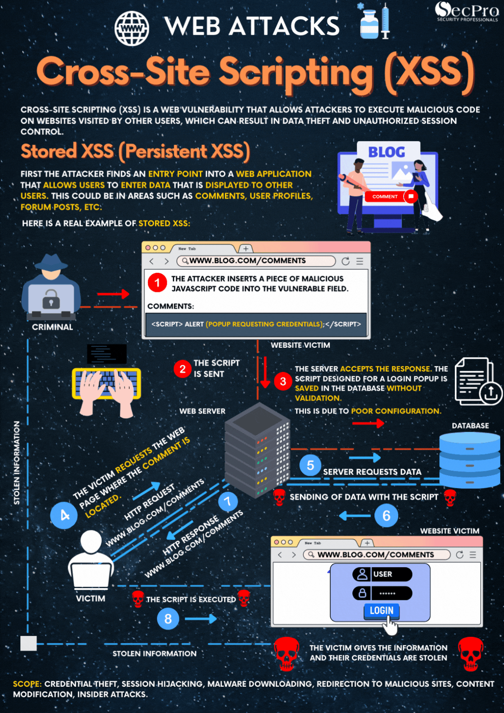
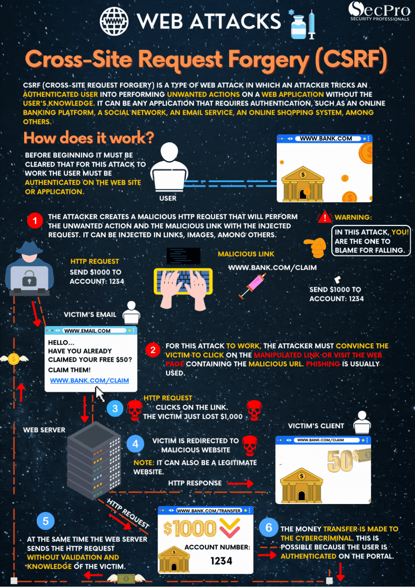


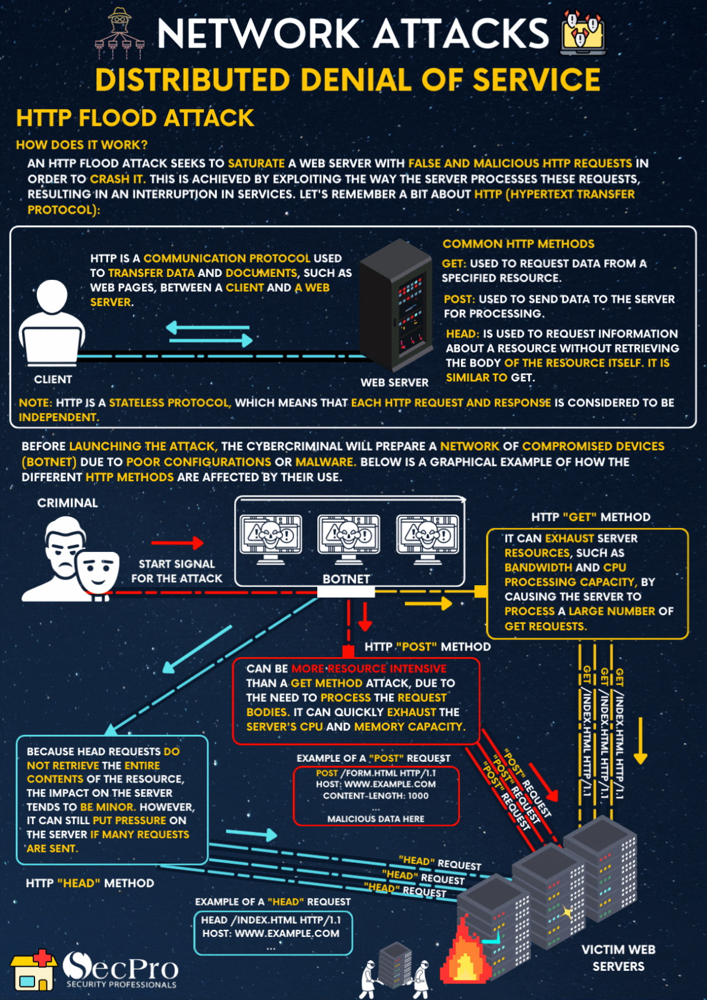
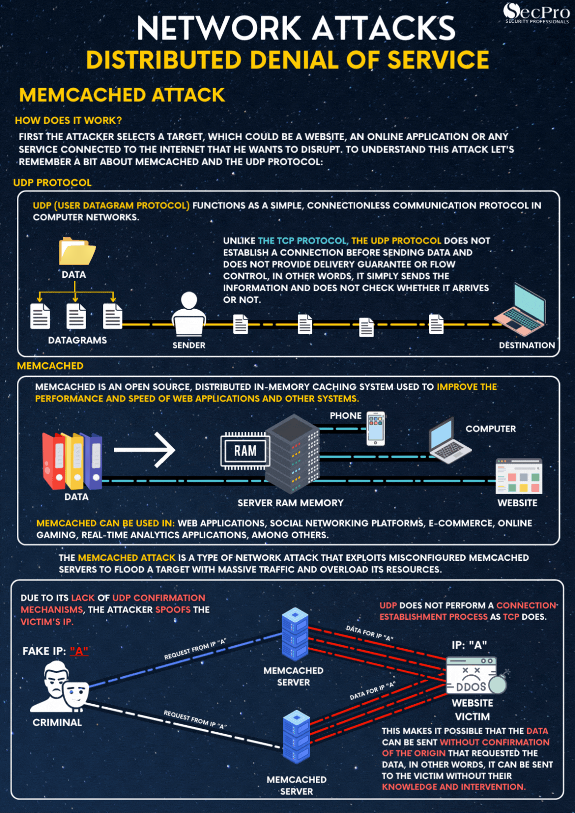
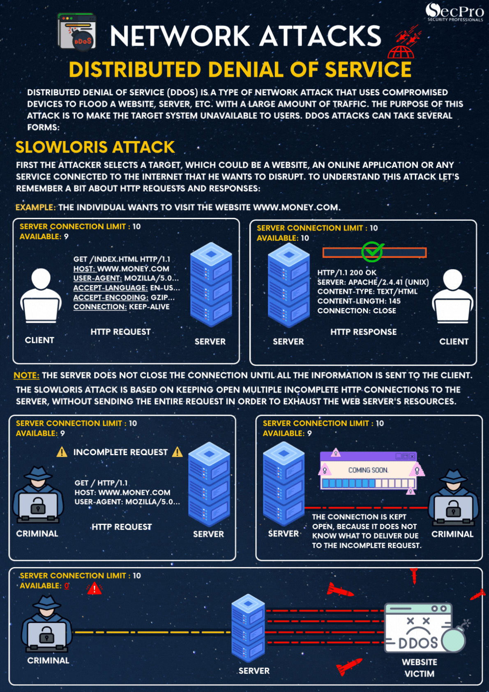

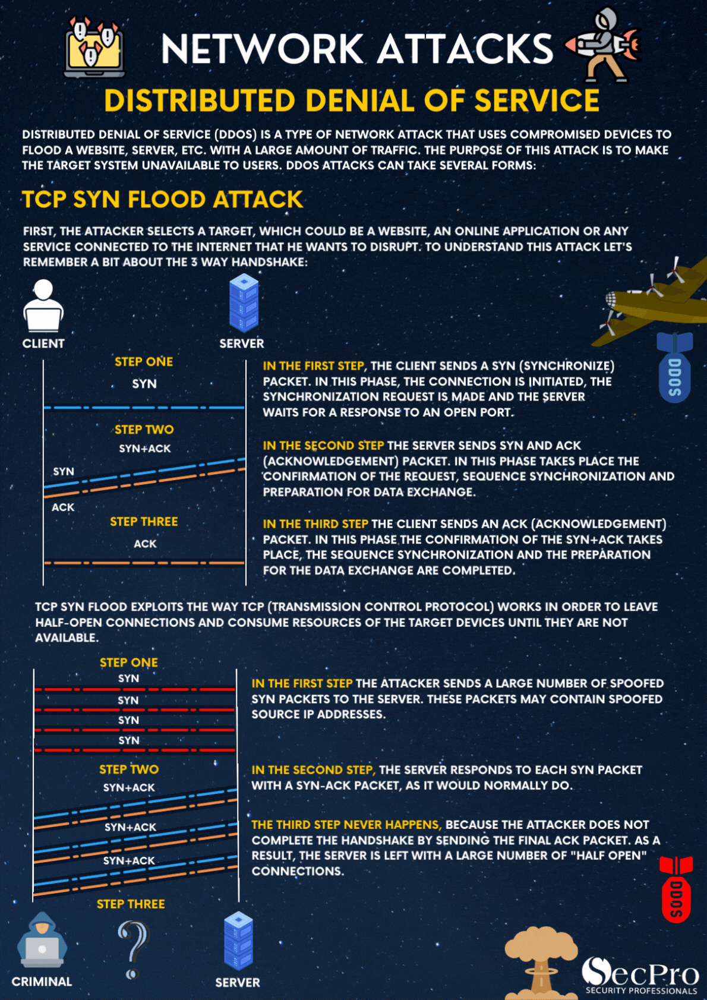

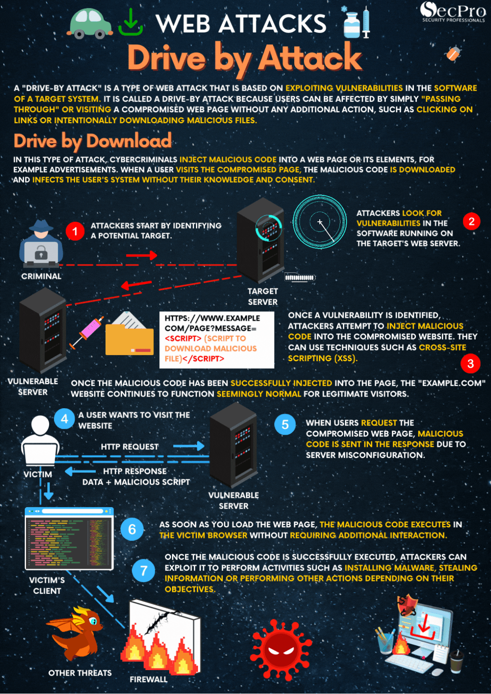
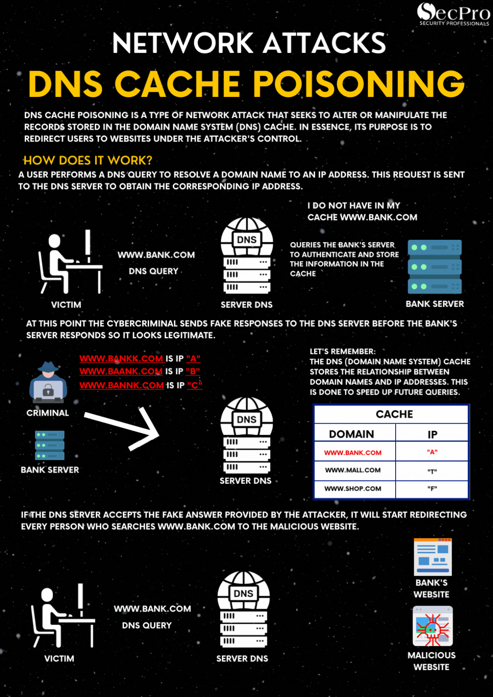

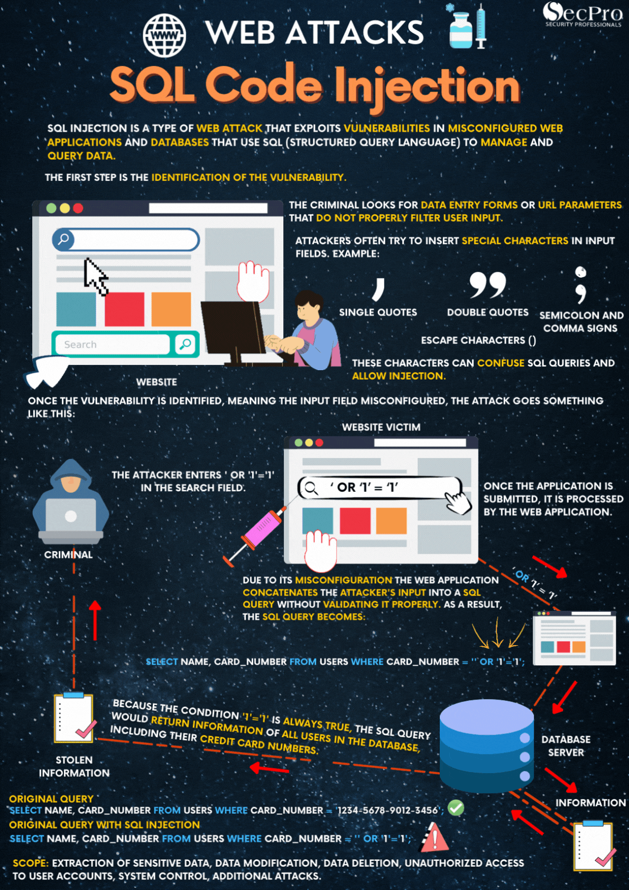
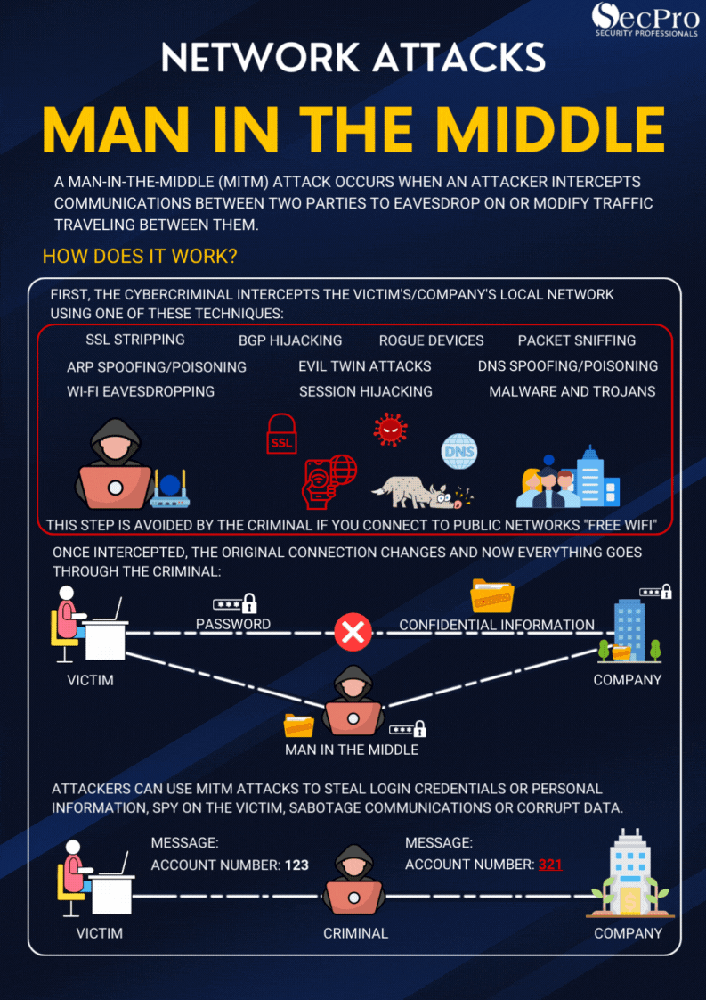
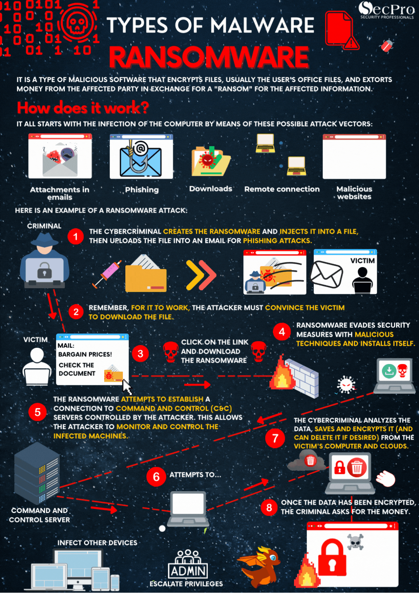
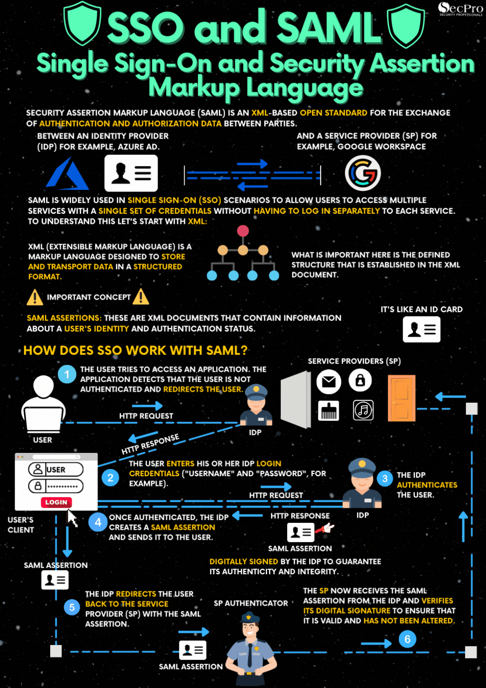

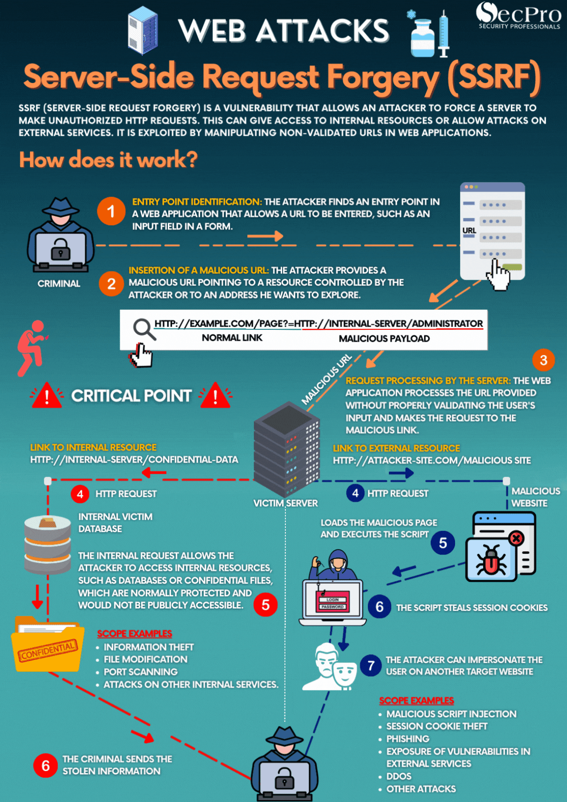

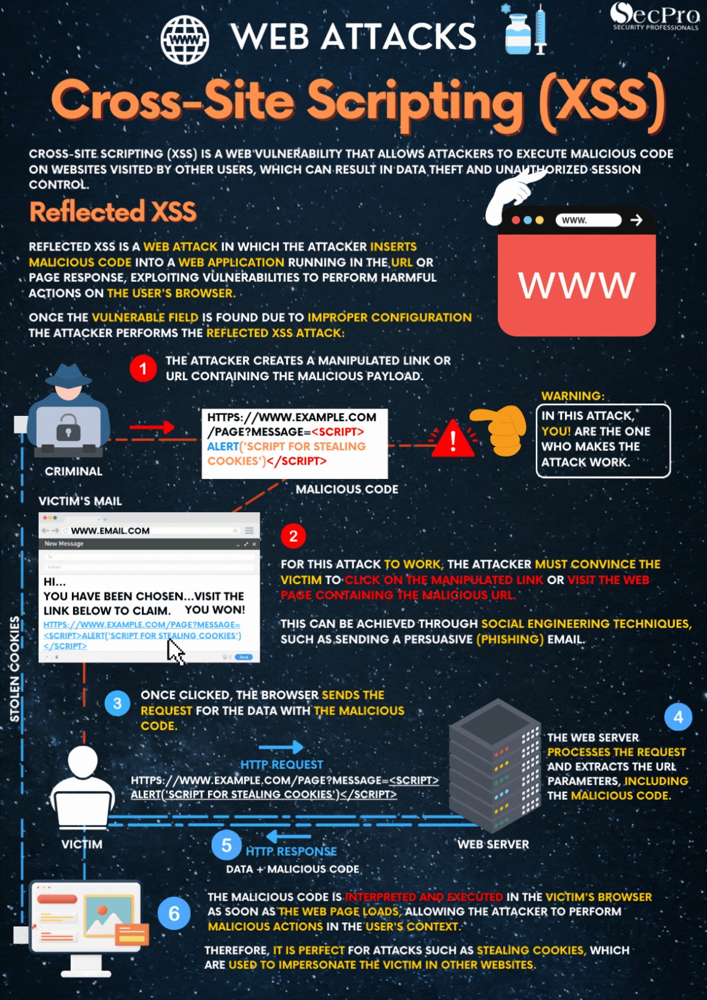
Site Visitors